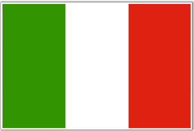

¡Hola! Native speaker. Mexico's official language.
English
Hi! Proficient speaker. I've been learning English for 10 years. TOEFL accreditation.

Italian
Ciao! Proficient speaker. Learned it for more than 4 years and it is recognized.
Chinese
Ni hao! Started learning the most spoken language in the world at school.
Robotics Club
Nine years ago when I was too young to join the Robotics Club at my school, I bought my own Lego Kit and learned more about building robots in websites, blogs and books. Eventually, I noticed that each time I constructed, my robots were stronger and faster.
Nowadays, not only do I work with advanced electrical platforms, but also I am a mentor for about 50 students in the Club. I have noticed that robotics is learning in a playful and fun way. Furthermore, it is not theoretical data, it is a hands-on experience where I can experiment, practice trial and error, and overcome obstacles. This year I am a FIRST Lego League coach and I realized that a robot can solve real-world problems, like having a gripper that picks something up and moves it, for example.
After all, robotics was the activity that shaped me into being an engineer.
The Killing Fire
A stop-motion short movie with Legos based on the actual self-centered way of thinking. Sometimes being greedy drives you to the limit.
Finalist of the 30º International Science and International Fair, MOSTRATEC, held in Brazil in October 2015. Silver medal winner in Infomatrix Continental Latin America in March 2015. Gold medal winner in Multimedia Project Gulf of Mexico.
Mario's Tasters
Taekwondo
Green Club
Mario's Tasters
Sale of homemade brownies to fund and instruct experimental projects related to science and technology in an orphanage.
Black belt and practitioner for more than 5 years. 1st place in Mexico’s Six Flags Championship Gold Medal in the National Martial Arts Excellence Competition.
Green Club
My school and home are completely surrounded by nature. As we all rely on our environment, it is our duty to take care of it.
Two years ago I noticed a lack of recycling and reusing initiatives at my school. People needed to be conscious of this matter. So, I founded an environmental club and it now has more than 20 members. We participate in activities and projects to provide students, teachers and parents some tools that teach and practice an ecofriendly way of living. We impacted people's lifestyles and gained popularity, to the point that we were a top 50 Latin American Disney’s Friends for a Change project which included a grant to fund our work. We impacted people's lives to become more environmentally friendly, by planting dozens of trees next to our school, for example.
As we grew in popularity, members and ideas, I had more responsibilities, as I am the president and founder. Therefore, I learned to be more organized: from hosting days of service to creating pamphlets to promote the Club. But most importantly: I got the skills to work in team and solve several problems, as it is the first studentlead Club in my school.


 Mario's Tasters
Mario's Tasters
 Taekwondo
Taekwondo
 Green Club
Green Club